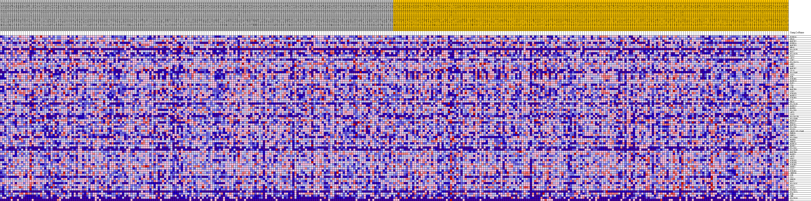
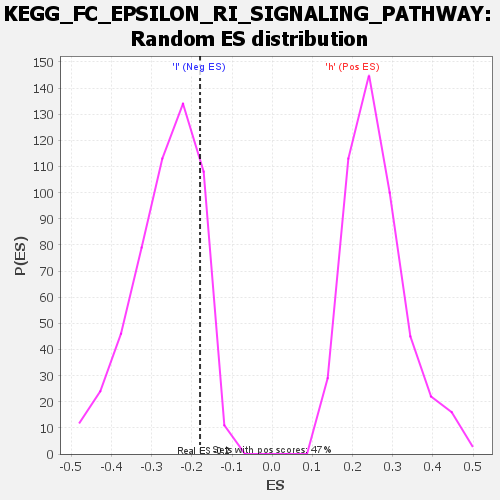

| | | Dataset | VCAN.VCAN.cls#h_versus_l.VCAN.cls#h_versus_l_repos |
| Phenotype | VCAN.cls#h_versus_l_repos |
| Upregulated in class | l |
| GeneSet | KEGG_FC_EPSILON_RI_SIGNALING_PATHWAY |
| Enrichment Score (ES) | -0.1798811 |
| Normalized Enrichment Score (NES) | -0.68318945 |
| Nominal p-value | 0.85388994 |
| FDR q-value | 1.0 |
| FWER p-Value | 1.0 |
Table: GSEA Results Summary
 Fig 1: Enrichment plot: KEGG_FC_EPSILON_RI_SIGNALING_PATHWAY
Fig 1: Enrichment plot: KEGG_FC_EPSILON_RI_SIGNALING_PATHWAY
Profile of the Running ES Score & Positions of GeneSet Members on the Rank Ordered List
| SYMBOL | TITLE | RANK IN GENE LIST | RANK METRIC SCORE | RUNNING ES | CORE ENRICHMENT | | 1 | FCER1G | na | 1362 | 0.090 | 0.0027 | No |
| 2 | KRAS | na | 1433 | 0.089 | 0.0285 | No |
| 3 | MAP2K2 | na | 2771 | 0.073 | 0.0265 | No |
| 4 | FCER1A | na | 3290 | 0.069 | 0.0380 | No |
| 5 | MAP2K3 | na | 3706 | 0.066 | 0.0505 | No |
| 6 | NRAS | na | 4243 | 0.062 | 0.0595 | No |
| 7 | PLA2G2E | na | 4486 | 0.060 | 0.0733 | No |
| 8 | RAC2 | na | 5310 | 0.055 | 0.0750 | No |
| 9 | PLA2G2D | na | 5581 | 0.053 | 0.0862 | No |
| 10 | RAC3 | na | 5872 | 0.051 | 0.0964 | No |
| 11 | AKT2 | na | 7025 | 0.045 | 0.0892 | No |
| 12 | CSF2 | na | 7037 | 0.045 | 0.1027 | No |
| 13 | PLA2G12A | na | 7184 | 0.044 | 0.1135 | No |
| 14 | GRB2 | na | 7203 | 0.044 | 0.1266 | No |
| 15 | GAB2 | na | 8551 | 0.038 | 0.1136 | No |
| 16 | MAP2K7 | na | 9377 | 0.034 | 0.1088 | No |
| 17 | IL13 | na | 10092 | 0.030 | 0.1051 | No |
| 18 | PLA2G4E | na | 10567 | 0.028 | 0.1051 | No |
| 19 | VAV1 | na | 11353 | 0.025 | 0.0985 | No |
| 20 | BTK | na | 11407 | 0.025 | 0.1051 | No |
| 21 | PIK3R5 | na | 11413 | 0.025 | 0.1126 | No |
| 22 | MAPK13 | na | 12000 | 0.022 | 0.1088 | No |
| 23 | RAF1 | na | 12300 | 0.021 | 0.1098 | No |
| 24 | IL4 | na | 13115 | 0.018 | 0.1005 | No |
| 25 | LYN | na | 13201 | 0.018 | 0.1044 | No |
| 26 | MAP2K6 | na | 13469 | 0.017 | 0.1047 | No |
| 27 | LCP2 | na | 13539 | 0.017 | 0.1084 | No |
| 28 | PIK3CD | na | 13702 | 0.016 | 0.1104 | No |
| 29 | MAPK12 | na | 13724 | 0.016 | 0.1148 | No |
| 30 | PIK3R3 | na | 13890 | 0.015 | 0.1165 | No |
| 31 | LAT | na | 14287 | 0.014 | 0.1135 | No |
| 32 | HRAS | na | 14496 | 0.013 | 0.1137 | No |
| 33 | PLA2G1B | na | 16328 | 0.007 | 0.0827 | No |
| 34 | MAPK11 | na | 18129 | 0.002 | 0.0507 | No |
| 35 | MAPK8 | na | 18521 | 0.001 | 0.0439 | No |
| 36 | PLA2G5 | na | 23064 | -0.006 | -0.0367 | No |
| 37 | AKT1 | na | 23629 | -0.007 | -0.0447 | No |
| 38 | VAV3 | na | 23679 | -0.007 | -0.0434 | No |
| 39 | PLA2G12B | na | 24475 | -0.009 | -0.0549 | No |
| 40 | PLA2G4B | na | 24763 | -0.010 | -0.0570 | No |
| 41 | MAPK14 | na | 24933 | -0.011 | -0.0568 | No |
| 42 | MS4A2 | na | 25050 | -0.011 | -0.0556 | No |
| 43 | MAP2K1 | na | 25365 | -0.012 | -0.0577 | No |
| 44 | PLA2G6 | na | 26374 | -0.015 | -0.0715 | No |
| 45 | PLCG1 | na | 27958 | -0.019 | -0.0944 | No |
| 46 | JMJD7-PLA2G4B | na | 28303 | -0.020 | -0.0946 | No |
| 47 | PRKCB | na | 29388 | -0.023 | -0.1073 | No |
| 48 | PRKCA | na | 29393 | -0.023 | -0.1003 | No |
| 49 | PLA2G4A | na | 31114 | -0.028 | -0.1231 | No |
| 50 | MAPK9 | na | 32100 | -0.030 | -0.1317 | No |
| 51 | PRKCD | na | 32225 | -0.031 | -0.1246 | No |
| 52 | MAPK10 | na | 32612 | -0.032 | -0.1219 | No |
| 53 | MAPK1 | na | 33245 | -0.034 | -0.1231 | No |
| 54 | PLA2G3 | na | 33531 | -0.034 | -0.1179 | No |
| 55 | PLA2G2F | na | 33637 | -0.035 | -0.1092 | No |
| 56 | MAP2K4 | na | 33864 | -0.035 | -0.1026 | No |
| 57 | MAPK3 | na | 35627 | -0.040 | -0.1224 | No |
| 58 | AKT3 | na | 38800 | -0.048 | -0.1652 | Yes |
| 59 | SOS2 | na | 39248 | -0.050 | -0.1583 | Yes |
| 60 | PIK3CG | na | 39795 | -0.051 | -0.1527 | Yes |
| 61 | PIK3CB | na | 39858 | -0.051 | -0.1383 | Yes |
| 62 | PIK3R2 | na | 40426 | -0.053 | -0.1326 | Yes |
| 63 | PDPK1 | na | 41401 | -0.055 | -0.1334 | Yes |
| 64 | VAV2 | na | 42379 | -0.058 | -0.1335 | Yes |
| 65 | PIK3R1 | na | 42920 | -0.060 | -0.1252 | Yes |
| 66 | INPP5D | na | 44777 | -0.065 | -0.1391 | Yes |
| 67 | SYK | na | 45105 | -0.066 | -0.1249 | Yes |
| 68 | IL5 | na | 46231 | -0.070 | -0.1241 | Yes |
| 69 | PRKCE | na | 46392 | -0.070 | -0.1057 | Yes |
| 70 | RAC1 | na | 46582 | -0.071 | -0.0876 | Yes |
| 71 | PLA2G2C | na | 47209 | -0.073 | -0.0769 | Yes |
| 72 | SOS1 | na | 47435 | -0.074 | -0.0586 | Yes |
| 73 | PLCG2 | na | 47713 | -0.075 | -0.0410 | Yes |
| 74 | PIK3CA | na | 49464 | -0.081 | -0.0481 | Yes |
| 75 | PLA2G2A | na | 50179 | -0.084 | -0.0354 | Yes |
| 76 | FYN | na | 51576 | -0.092 | -0.0328 | Yes |
| 77 | TNF | na | 51972 | -0.094 | -0.0114 | Yes |
| 78 | PLA2G10 | na | 53724 | -0.109 | -0.0102 | Yes |
| 79 | IL3 | na | 54698 | -0.126 | 0.0103 | Yes |
Table: GSEA details [plain text format]

Fig 2: KEGG_FC_EPSILON_RI_SIGNALING_PATHWAY
Blue-Pink O' Gram in the Space of the Analyzed GeneSet

Fig 3: KEGG_FC_EPSILON_RI_SIGNALING_PATHWAY: Random ES distribution
Gene set null distribution of ES for KEGG_FC_EPSILON_RI_SIGNALING_PATHWAY